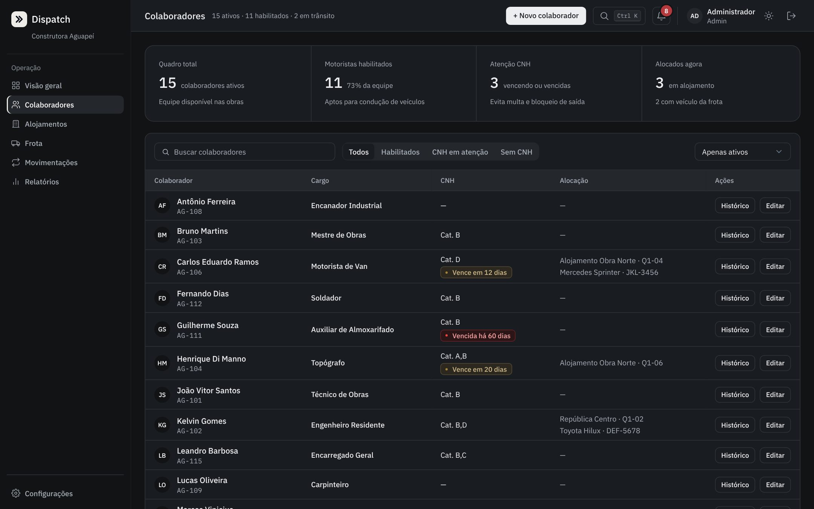
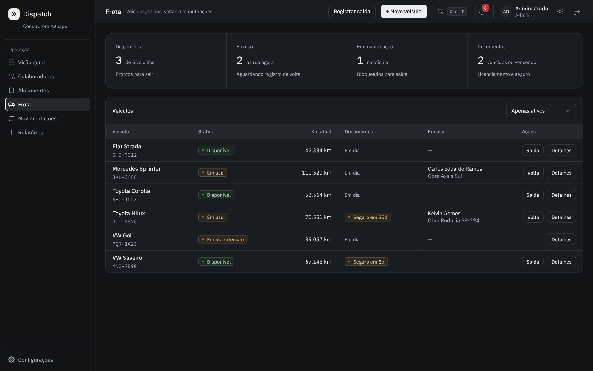
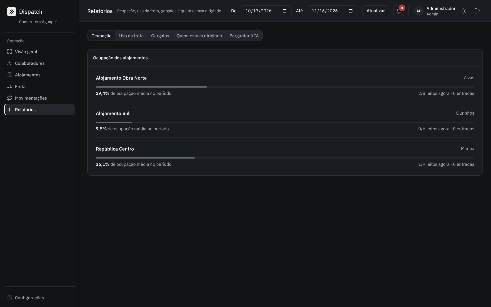

Essencial
Sob consulta
Organização para concentrar o que importa no dia a dia.
- Cadastro de colaboradores
- Alojamentos, quartos e leitos
- Frota e movimentações
- Resumo operacional

Como tornar o dia a dia mais simples? É dessa inquietação que nasce o DevCore: sete pessoas com ideias diferentes e uma vontade em comum, desenvolver soluções úteis, claras e bem construídas.
Pessoas, alojamentos e frota numa visão só. Saiba quem está onde, quem está com cada veículo e o que precisa de atenção.
Projeto acadêmico · Desafio proposto pela Eficaz Marketing. Telas demonstrativas com dados fictícios de uma construtora.

O essencial não é ter mais ferramentas. É ter as conexões certasEssa é a nossa forma de construir

O nosso trabalho une cuidado com a experiência, visão de produto e atenção a cada detalhe. O Dispatch é a primeira expressão dessa forma de pensar.
Diferentes olhares, aprendizados compartilhados e a vontade de fazer acontecer.
Cada parte da operação encontra seu lugar, com as regras de quem trabalha em obra.
Cadastros, CNH e movimentações. Informações conectadas a cada colaborador.
Quartos, leitos e estadias. Capacidade acompanhada com as regras da NR‑24.
Saídas, retornos e quilometragem. Cada veículo com seu histórico completo.
Relatórios e auditoria com hashes encadeados para conferir cada alteração.
Do essencial a uma operação mais ampla, conheça as propostas de escopo do Dispatch.
Sob consulta
Organização para concentrar o que importa no dia a dia.
Sob consulta
Mais contexto para acompanhar, analisar e decidir.
Vamos conversar
Um ponto de partida para necessidades específicas.
Planos conceituais de apresentação. Valores, disponibilidade, integrações e condições comerciais ainda não definidos.
Sete pessoas com ideias diferentes, aprendizados compartilhados e a vontade de fazer acontecer. Esse é o núcleo do DevCore.
Juntos, DevCore
Bruno1 de 7
O essencial antes do próximo passo.
É o sistema desenvolvido pelo DevCore para conectar colaboradores, alojamentos e frota. O projeto acadêmico usa uma construtora fictícia como cenário de demonstração.
Sim. O botão “Acessar Dispatch” abre a tela de login da aplicação. O acesso depende de uma conta cadastrada no ambiente.
Ainda não. Os planos apresentam possibilidades de escopo. Preços, disponibilidade e condições comerciais serão definidos antes de uma oferta comercial.
O projeto prevê perguntas sobre os dados, resumos e suporte por IA via Groq. A utilização depende de configuração e credenciais. Alertas pelo Telegram também são opcionais.
Seu próximo movimento começa aqui. Abra a demonstração e percorra a operação de uma construtora do primeiro registro ao relatório.